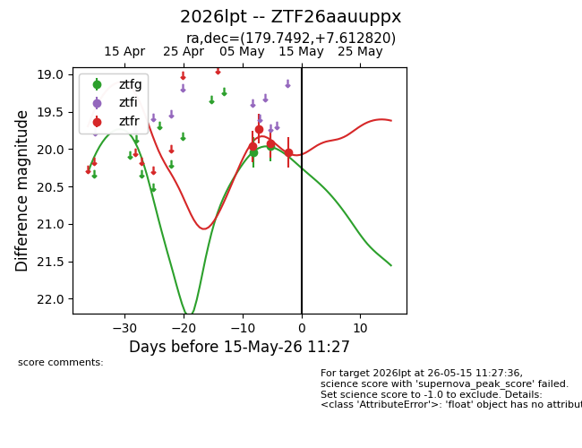
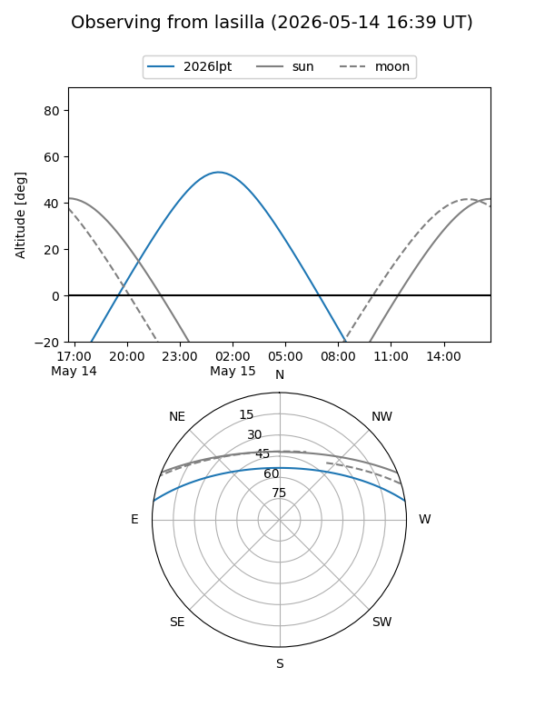
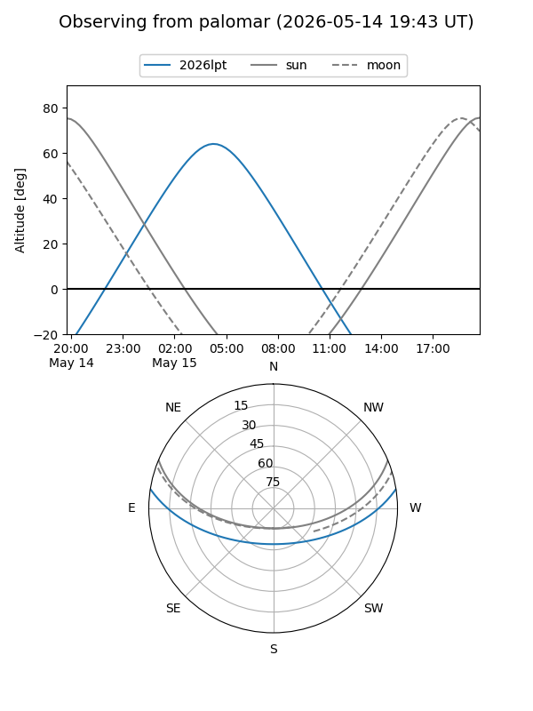
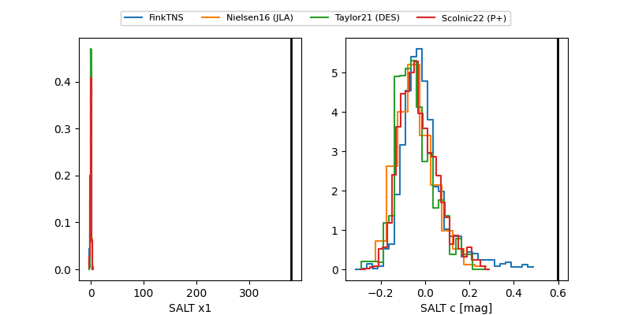

2026lpt
Target 2026lpt at 2026-05-15 11:29
Aliases and brokers:
FINK: link
Lasair: link
ALeRCE: link
TNS: link
YSE: link
alt names
ZTF26aauuppx (ztf,fink_ztf)
2026lpt (tns,yse)
Coordinates:
equatorial (ra, dec) = 179.7492,+7.61282
equatorial (HMS+DMS) = 11:58:59.82,+07:36:46.15
galactic (l, b) = (268.0319,+66.86168)
Flags:
Photometry:
last ztfg=19.96, ztfr=20.04
2 ztfg, 4 ztfr detections
Lightcurve

Visibility


Additional plots
